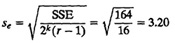
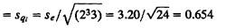

| Previous | Table of Contents | Next |
As was pointed out earlier in Section 15.4, the logarithmic transformation is useful only if the ratio ymax/ymin is large. For a small range the log function is almost linear, and so the analysis with the multiplicative model will produce results similar to that with the additive model.
Notice that a logarithm transformation resulting in a multiplicative model is just one of numerous other possible transformations. For example, the Box-Cox family of power transformations discussed in Section 15.4 can be used if a linear model is found inadequate and physical considerations allow their use.
Knowledge about the system behavior should always take precedence over statistical considerations. Statistics can help you find a suitable model if you have no other knowledge of the system. However, don’t assume that the system is a black box when it isn’t. In general, the system behavior known to the analyst should be used to come up with the model. Blindly using an additive linear regression model and ignoring system considerations is a frequent mistake.
The 2kr design with r replications of 2k experiments is a straightforward extension of 22r design. In all, there are 2k effects including interactions and the overall mean. The expressions are summarized in Box 18.1 and are illustrated next by an example for a 233 design and a case study for a 243 design.
Example 18.9 Consider the data of Table 18.6 for a 233 design. The table also shows estimation of effects. The SSE can be computed after computing other sums of squares. The values are listed in Table 18.7. The errors have 23(3 – 1), or 16, degrees of freedom. Therefore,
- Standard deviation of errors 
- Standard deviation of effects 
|
Box 18.1 Analysis of 2kr Factorial Designs
|
| TABLE 18.6 Analysis of a 233 Experimental Design | |||||||||
|---|---|---|---|---|---|---|---|---|---|
| I | A | B | C | AB | AC | BC | ABC | y | Mean
|
| 1 | –1 | –1 | –1 | 1 | 1 | 1 | –1 | (14, 16, 12) | 14 |
| 1 | 1 | –1 | –1 | –1 | –1 | 1 | 1 | (22, 18, 20) | 20 |
| 1 | –1 | 1 | –1 | –1 | 1 | –1 | 1 | (11, 15, 19) | 15 |
| 1 | 1 | 1 | –1 | 1 | –1 | –1 | –1 | (34, 30, 35) | 33 |
| 1 | –1 | –1 | 1 | 1 | –1 | –1 | 1 | (46, 42, 44) | 44 |
| 1 | 1 | –1 | 1 | –1 | 1 | –1 | –1 | (58, 62, 60) | 60 |
| 1 | –1 | 1 | 1 | –1 | –1 | 1 | –1 | (50, 55, 54) | 53 |
| 1 | 1 | 1 | 1 | 1 | 1 | 1 | 1 | (86, 80, 74) | 80 |
| 319 | 67 | 43 | 155 | 23 | 19 | 15 | –1 | Total | |
| 39.87 | 8.375 | 5.375 | 19.37 | 2.875 | 2.375 | 1.875 | –0.125 | Total/8 | |
| Previous | Table of Contents | Next |